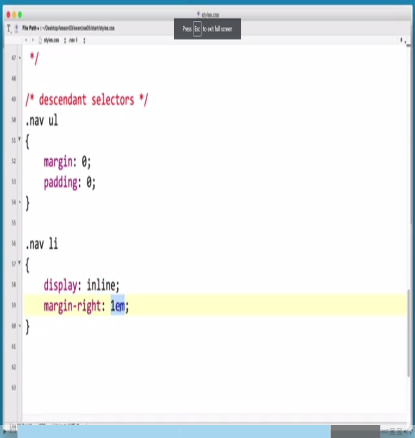

CSS Selectors, Attributes, Descendent and Child
Selectors
A selector allows you to taget specifiic HTML elements that you want to style
An example of a HTML element being paragraph, main, title
The selector "selects" the element of the html page. There are 57 (+?) different selectors that can be used in CSS
For example you could select a paragraph or a title and then use CSS to change the color, size, and other characteristics
Attribute
The attribute selector is used to select elements with the specified attribute or value
The Purpose; Style all attribute elements with a target audience
Basically this allows us to select one thing from our code and change it without having to manually change every single line of the code that it is in.
Ex; a[target]{background-color:yellow;}

Descendent
A descendent selector matches all elements that are descendants of a specified element, the first element represents the ancestor element (like a parent element) the second selector represents the element were trying to match
They are written with a space between them
You read it right to left
Ex; p(ancestor) a(match)
This is useful for when you want to select certain areas without changing the entire code.
When writing the descendent you can make it very specific, or less specific and get almost the same result, be as specific as possible
The more efficient and robust you are the easier it is to transfer and the easier it is to move to a different document
Child Selector
Child selectors are written with two selectors that are separated with a greater than symbol
Child selectors only select items that are direct children
White spaces are ignored
Read right to left
Not supported by IE6
Ex; p>a { } OR p > a { }
This is useful for when you want to affect only specific areas of the code without having your changes cascading further down